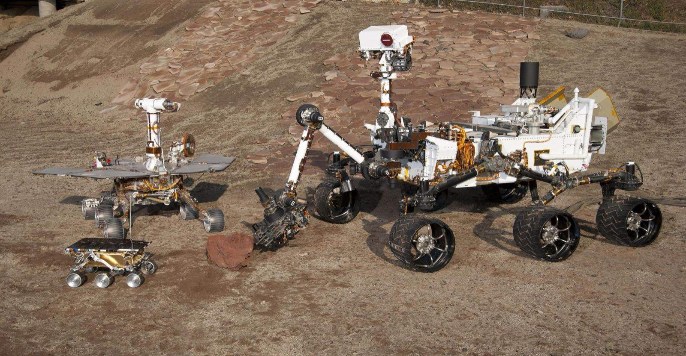

Open a pull request
Add one small file: your coordinator's source repository, a pinned commit and its licence. The source is open and builds with a Dockerfile.

An open, seeded simulator. A coordinator directs a crew of robots to build a landing pad while machines wear out, dust storms cut the power and Earth is minutes away.
Every score run by the project
Loading the board…
Ranked by the headline, success rate × speed, on the nominal variant: averaged over the three outposts on the Standard track, and for the crew an entry brings on the fleet design track. Entries that the same runs cannot tell apart share a rank. Round 1 has not run yet; until it has, the board shows the published v1.1 results.
Three steps from a pull request to a row
Add one small file: your coordinator's source repository, a pinned commit and its licence. The source is open and builds with a Dockerfile.
The project builds your image once and runs it in containers with no network. One coordinator process per run, the same simulator for everyone.
Results come back as a pull request anyone can read. Once it is merged your row is here, with every scorecard behind it.
Every score here was run by the project
No entry reports its own numbers. A coordinator is any program that speaks the protocol on standard input and output, so it can be written in anything. What is ranked is what it did in the project's own runs.
A round's seeds are computed from the commit that closes it. Nobody knows them while the code is being written, and anyone can reproduce the round byte for byte afterwards.
Five builds, start to finish
Six sinterers, 24 sols
409 hours of dust on a short plant
Fourteen sols without Earth
130 faults, and the pad gets built
A crew of its own design, 16 sols
Any saved run, in the browser
What catalog 1.1 does not tell apart
Stress makes almost no run fail: 1 in 3,600. A build can be slow, and it still ends.
Two weeks without Earth cost every coordinator under 1%. Nothing a build needs waits for an answer.
Random matches greedy. When a cell takes seven hours to sinter, who takes which task matters little.